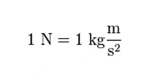

Un newton es la fuerza capaz de impartir una aceleración de 1 m s -2 a una masa de 1 kilogramo . Se necesita 1 newton para aumentar la velocidad de una masa de 1 kg en 1 m s -1 cada segundo. Esta unidad derivada del Sistema Internacional se expresa en unidades base de la siguiente manera:
El Sistema Internacional requiere que el nombre de la unidad ( newton ) se escriba en minúsculas y el símbolo ( N ) en mayúsculas.
El uso del newton como unidad de fuerza se hizo obligatorio a partir de 1948, en la cuarta reunión de la novena Conferencia General de Pesas y Medidas . La IX CGPM también establece:
-el julio , como el trabajo producido por un newton, cuyo punto de aplicación se mueve un metro en la dirección de la fuerza (el vatio es la potencia que produce 1 julio por segundo);
-el pascal , como la presión ejercida uniformemente sobre una superficie de 1 metro cuadrado que produce una fuerza de 1 newton;
otras unidades como decapoise , una unidad de viscosidad dinámica , o myriastokes , una unidad de viscosidad cinemática .